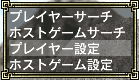
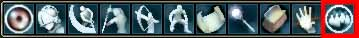
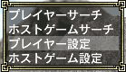
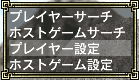

目次
>
ゲームについて
>
日本Falcom攻略
>
Sorcerian Online
>
チュートリアル
>
パーティーについて
Sorcerian Online
|
概要
|
チュートリアル
|
|
パーティーについて に戻る
|
パーティーに参加したい人
ホストの検索
ホストゲームへのログイン
ログイン
挨拶
パーティーに参加
強制終了したら
諸注意
動的シナリオ、クエスト
静的シナリオ、チャプター
プレイヤー設定
ホスト検索
パーティーに参加するのならば、まずはどのようなパーティー募集があるか調べなくてはなりません。詳しいホストーゲームの検索は「
ホストゲーム検索
」を見てください。

メニューの1ページ目「サーチ」を選び、サーチウィンドウの「
ホストゲームサーチ
」を選んでください。もしくは、「G」キーを押して「ホストゲームサーチ」のウィンドウを表示します。
すると上の画像のように、ホストゲームを公開しているプレイヤーが表示されます。「ゲームコメント」を見て、
どのような人を募集しているのか
調べてください。
「ゲームコメント」の横の画像は、パスワードが設定されているかどうかを示すものです。赤がパスワードあり、青がパスワード無しです。赤のパスワードありのホストは、個人ショップの紹介をしている場合があります。また下から2番目のように
個人ショップの宣伝をしながら、パスワードを設定していないホストにログインする場合は、一度確かめた方がいいかもしれません
。
ログインしたいゲームを決めたら、右にウィンドウが出ます。ここで「ログインするゲーム」を選びます。しかし、
これだけではホストゲームにログインしたことにはなりません
。
ホストゲームへのログイン
1.ログイン
ホストゲームへのログインは、町で行います。
Main Gateへ行き、ログインウィンドウで「
サーチしたゲーム
」を選択しログインしてください。ただし、パスワードが設定されている場合は、パスワードを入力してからのログインとなります。
ログインをする前に、パーティーに参加していいか「:tell」でホストプレイヤーに聞くとさらによいです。特に
ポートテスト中のホストには、ログインする前にその旨を伝えてくれるとありがたがられます
。
ちなみに、このチュートリアルでは他人のゲームにログインしたプレイヤーをゲストと呼ぶことにています。
2.挨拶
ゲームにログインしたら、ホストプレイヤーに挨拶をしてください
。ホストプレイヤーのメッセージウィンドウには、誰かがログインすると1行だけメッセージが出ますが、戦闘中などはメッセージ流れが速いので見逃す場合があります。
そのためログインしてすぐに「:tell」や「:sh」を使って挨拶をしてください。たいていの場合は、しばらくするとホストプレイヤーからパーティーの参加の誘いがあります。
もしかしたら、ログインして早々ホストプレイヤーの方から話しかけてくる場合があります。その時は、ホストプレイヤーの指示に従ってください。
3.パーティーに参加
他人のゲームにログインしても、ホストプレイヤーとパーティーを組んだことになりません。
パーティーを組むには、パーティーに誘う、もしくは誘われなければなりません
。
パーティーの誘いを受けたら、メニュー1ページ目の「
パーティー
」を選んでください。パーティーウィンドウの「
パーティーに参加する
」を選んでください。もしくはチャットウィンドウに「:join」と打ち込みましょう。
プレイヤー情報の所に、他のプレイヤーのステータスが表示されれば、パーティーを組んだことになります
。ちなみにパーティーリーダーの名前は他の人よりも黄色い色で表示されます。
強制終了したら
他人のゲームでプレーしていると、何らかの原因でホストプレイヤーのパソコンがインターネットから切断することがあります。するとゲストは
強制的にゲームからログアウトさせられ、自分のホームに戻ります
。
強制終了する原因は、人為的なミスから一般人では絶対に避けられないもの(停電など)もあるので、
このようなことが起きてもホストプレイヤーを責めないようにしましょう
。たいていの場合、ホストプレイヤーからの謝罪と強制終了した原因(もしくは言い訳)が来るはずです。
強制終了してホームに戻ったら、ゲストは町のMain Gateなどに集合することをお勧めします
。その方が、パーティーの再編成と 出発が早くできますし、ホストプレイヤーのためにもなります。
諸注意
1.動的シナリオ(クエスト)
パーティーでクエストを進める場合、戦闘不能になっても再度パーティーに合流できます。戦闘不能になった場合は、謝罪と残されたパーティー合流するまで待ってもらうようにお願いしましょう。
2.静的シナリオ(チャプター)
パーティーでペンタウァのチャプターを進める場合、戦闘不能になると再度パーティーに合流することはできません。その時は、ホストプレイヤーの指示に従ってください。
3.プレイヤー設定について
ゲストになる場合は、「プレイヤー設定」を「公開」してください
。
プレイヤー設定を確認するには、メニュー1ページ目の「
サーチ
」から、「
プレイヤー設定
」を選んでください。
そこで表示されるプレイヤー設定のウィンドウで「
設定を公開
」を選んでから、「
設定を反映
」してください。ちなみに、それ以外の設定はしなくても問題ありません。
プレイヤー検索で自分の名前が表示されていれば、公開されていることになります
。
プレイヤー検索はメニュー1ページ目の「サーチ」から、「プレイヤーサーチ」を選ぶ、もしくはマウスパレットの一番右のボタンを押してください。マウス操作ならばプレイヤー検索
ウィンドウ右下の「
TAB
」をクリックしてから
メニューウィンドウにフォーカスを移し、「
プレイヤー名
」を選び自分の名前を入力してください。キーボード操作ならばTabキーを押しメニューウィンドウにフォーカスを移し「
プレイヤー名
」を選び自分の名前を入力しましょう。

(マウスパレット)
(TABのボタン。この無駄な操作によりマウス完全対応という文面に疑問を持つことでしょう)
なぜゲストの場合はプレイヤー設定を公開しなければならないかというと、
プレイヤー検索を使いパーティーに誘うホストプレイヤーがいるためです
。そのようなホストのゲームにログインしたとき、ホストプレイヤーはあなたを誘いたくても誘うことができなくなります。
また「プレイヤーコメント」に「パーティーに入りたい」というような内容を書いておくと、突然パーティー参加の依頼が来るかもしれません。
|
パーティーについて に戻る
|
|
概要
|
チュートリアル
|
Sorcerian Online
|
目次へ戻る
|
ページの上部へ
|
 
